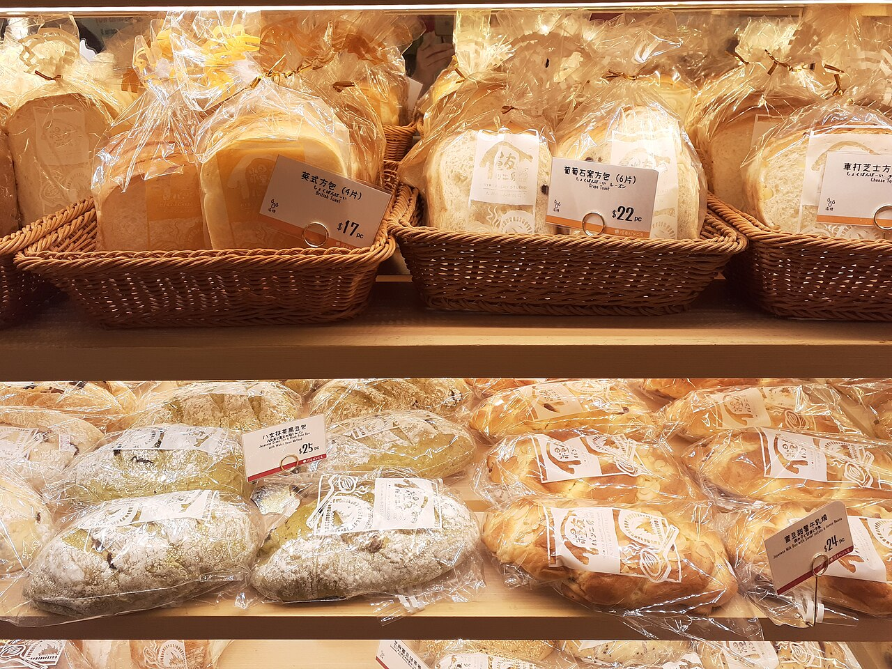
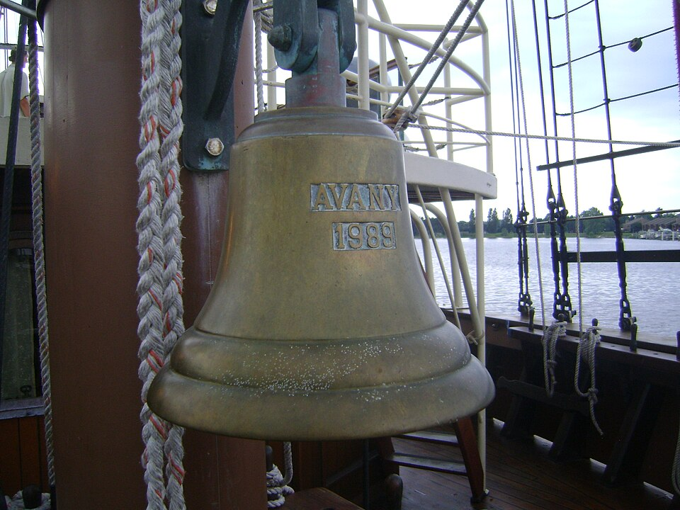
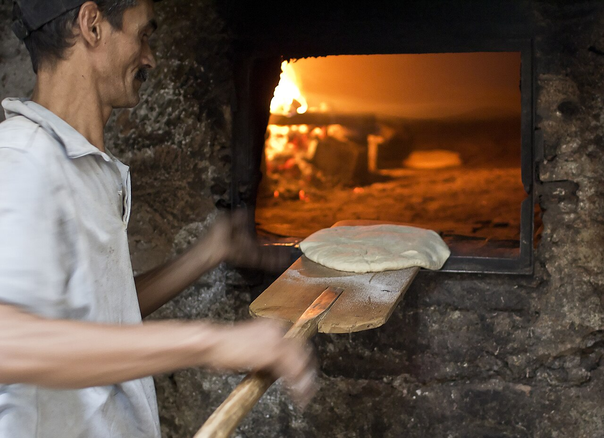
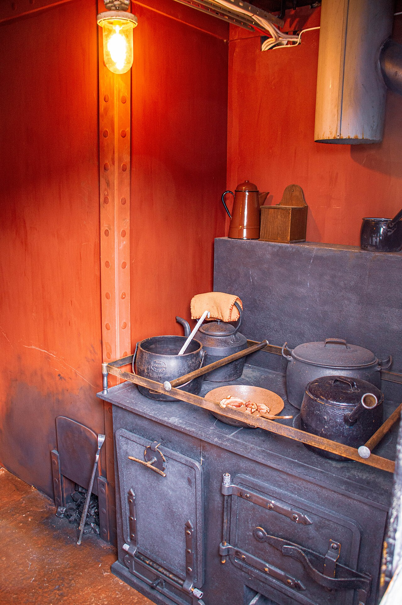
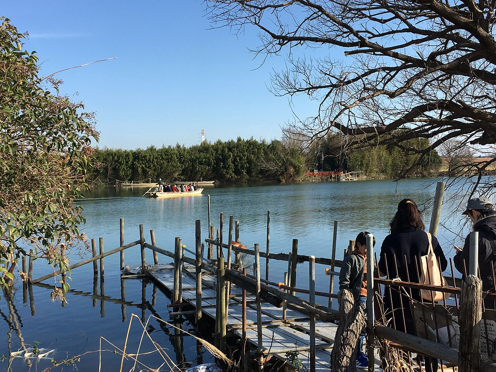

焼き上がりの時刻
食パンは1日2回、7時と11時に窯から出します。焼き上がると、店先に下げた船の鐘を6つ鳴らします。
船では30分ごとに鐘を打ち、4時間の当直のあいだに1つずつ増えていきます。7時も11時も、鳴るのは6つです。店主が船の厨房で毎朝聞いていた音なので、そのまま店の合図にしました。
川の渡し場の上で、朝6時から。


写真：かごの食パン（香港の日本式のパン屋）DAIAZLN oka／CC BY-SA 4.0、帆船の号鐘 Doug Coldwell／CC BY-SA 3.0（Wikimedia Commons）
食パンの焼き上がり

窯からパンを出す人（共同の窯、2011年）。写真：travelwayoflife／Wikimedia Commons／CC BY-SA 2.0
食パンは1日2回、7時と11時に窯から出します。焼き上がると、店先に下げた船の鐘を6つ鳴らします。
船では30分ごとに鐘を打ち、4時間の当直のあいだに1つずつ増えていきます。7時も11時も、鳴るのは6つです。店主が船の厨房で毎朝聞いていた音なので、そのまま店の合図にしました。
食パン（7時の回）が焼き上がります。鐘を6つ鳴らします。

船の厨房（イギリスの記念艦 M33）。店主の働いた貨物船の厨房も、このくらいの広さでした。写真：www.mgaylard.co.uk／Wikimedia Commons／CC BY 2.0
店主は、内航の貨物船とフェリーの厨房で18年、乗組員の食事を作ってきました。船の朝ごはんは、4時の当直が明ける前に用意します。パンを焼き始めたのもそのころで、揺れる厨房で毎朝14人分を焼いていました。
船を降りて、育った鷺ノ瀬町に戻り、渡し場の石段の上の空き家で店を始めました。仕込みはいまも3時半からです。
朝の当直（4時から8時）で打つ鐘の数。8つで当直が替わります。
鷺ノ瀬町 渡し場通り 2-14

江戸川の矢切の渡しで、舟を待つ人たち（2020年1月）。鷺ノ瀬の渡し舟も、このくらいの舟です。写真：Asanagi／Wikimedia Commons／CC0